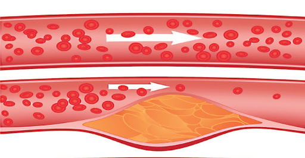
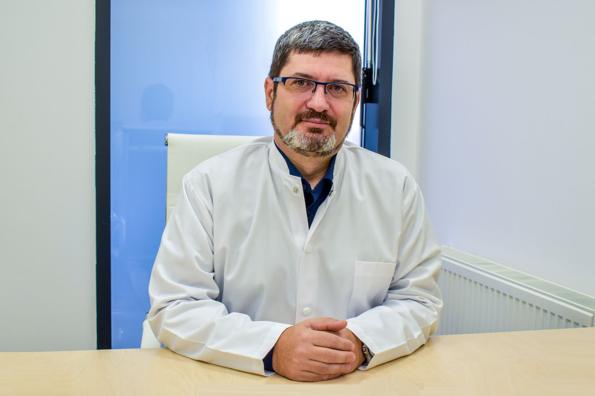
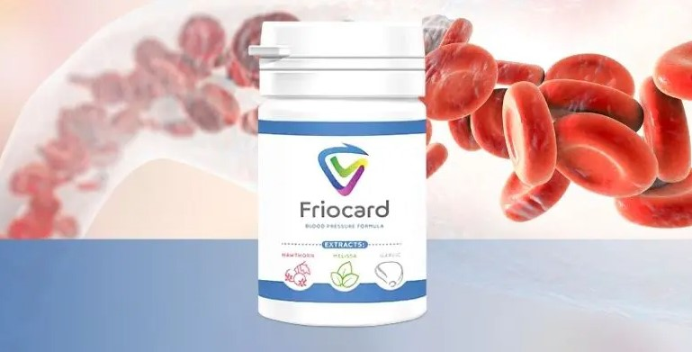
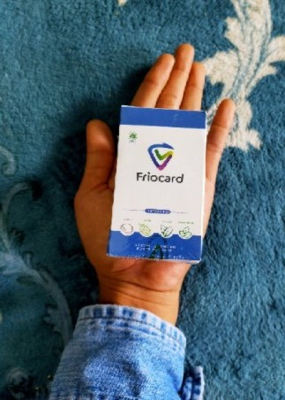
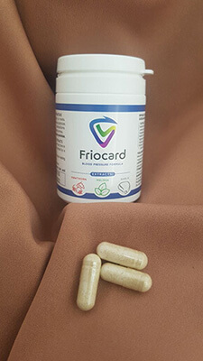
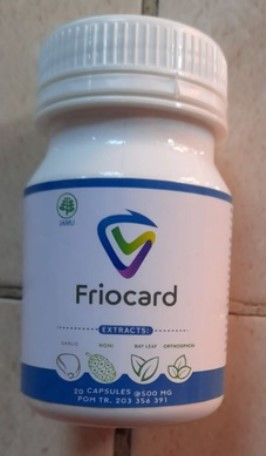

Un student la medicină din România a fost recunoscut în SUA ca geniu și a primit o bursă pentru descoperirea unei modalități de a scăpa de hipertensiune
Ideea studentului la medicină Tudor Coman - este un cuvânt nou în combaterea hipertensiunii arteriale. Este păcat că despre acest student în România ua aflat numai atunci când a câștigat la New York. Înainte de asta, apela la autoritățile noastre locale pentru sprijin, cerea ajutor în toate centrele științifice din România, declarându-și invenția, care poate salva mii de vieți, dar nimeni nu i-a acordat atenție.
Tudor spune că secretul longevității este în vase. Dacă sunt curate și sănătoase, atunci puteți trăi cu ușurință mai mult de 100 de ani, în același timp să vă simțiți complet sănătoși.
Corespondentul nostru a reușit să intervieveze tânărul geniu. Tudor Coman a descris în detaliu metoda sa inovatoare și de prelungire a vieții, pentru care a primit un grant și faimă mondială.
- Ați afirmat de multe ori că vasele de sânge curate sunt baza sănătății. De ce credeţi asta?
E simplu. Activitatea tuturor organelor și sistemelor interne depinde de calitatea alimentării cu sânge. La urma urmei, ceea este alimentarea cu sânge - este livrarea de oxigen și nutrienți către organele interne. În copilărie, adolescență, tinerețe, ne mișcăm foarte mult, vasele noastre sunt noi, elastice, curate - nutriția tuturor organelor este maximă. Cu toate acestea, pe măsură ce îmbătrânim, ne mișcăm din ce în ce mai puțin, iar vasele noastre de sânge încep să se murdărească. Acest lucru se datorează diverșilor factori – nu numai dăunători (de exemplu, cum ar fi fumatul, alimentația necorespunzătoare, ecologia, stilul de viață sedentar), dar și destul de natural (depunerea lipidelor, de exemplu, care apare la toți).
Și ce sunt vasele contaminate? Imaginați-vă țevi umplute cu rugină. Ce se întâmplă în cele din urmă? Ca urmare, presiunea apei crește, iar apa însăși devine lipsită de gust. Același lucru se petrece și cu vasele. Când în ele se depun colesterol sau alte substanțe, crește presiunea (vasele de sânge murdare sunt principala cauză a hipertensiunii!), sângele în sine este cu impurități, aportul de sânge devine nu ceea ce ar trebui să fie. Ca urmare, toate organele și sistemele suferă, iar ele alcătuiesc o persoană.
Ca urmare, persoana începe să îmbătrânească. Dacă curățați periodic vasele, puteți trăi cel puțin până la 120 de ani. Și, în același timp, nimic nu vă va durea – nici un organ, și creierul va funcționa bine. Adică, prin curățarea vaselor, vă puteți prelungi semnificativ viața și sănătatea. Și aceasta nu este doar o teorie.
- La ce fel de patologii duce contaminarea vasculară?
Așa cum am spus deja, din această cauză suferă întregul organism. Dar, fără îndoială, în primul rând suferă acele organe și sisteme care sunt direct legate de circulația sângelui – adică sistemul cardiovascular în sine.
Contaminarea vasculară provoacă boli cum ar fi:
1. Boala vasculară aterosclerotică. Vasele încetează să funcționeze complet: vasele mici devin înfundate complet, iar în cele mari sunt observate depozite mari de colesterol.
2. Boala coronariană. Apare din cauza unei deficiențe regulate de sânge în vasele coronare, care, la rândul său, se dezvoltă pe fondul contaminării vasculare.
3. Accident vascular cerebral. Cu o încălcare persistentă a alimentării cu sânge a țesuturilor creierului, se începe moartea terminațiilor nervoase, ceea ce duce la pierderea unor funcții.
4. Hipertensiune arterială. Când lumenul vaselor se îngustează din cauza contaminării, presiunea crește.
5. Varice. Apare nu numai pe picioare (care adesea îngrijorează femeile), ci și în interiorul organismului. Ca una dintre consecințele venelor varicoase - hemoroizi.
6. Tromboza venoasă și arterială. Cu contaminare prelungită, se poate forma un cheag de sânge în vase, ceea ce duce la moartea completă a vasului, ce poate duce, la rândul său, la moartea celulelor individuale dintr-un anumit organ. Dacă un tromb se rupe și intră în sânge, poate duce la blocarea vaselor de sânge în inimă – iar acesta este un atac de cord, care în 70% din cazuri se termină cu moartea.
Din cauza bolilor cardiovasculare mor de 4 ori mai mulți oameni decât de toate celelalte cauze combinate. Medicii știu despre acest lucru, știu că este necesară curățarea vaselor, dar din anumite motive nu există o astfel de practică în medicina României. Mulți medici în caz de hipertensiune arterială, prescriu pastile pentru a reduce tensiunea arterială. Dar ele nu tratează, ele dau un efect temporar. Și este necesar anume să curățați vasele. Apropo, în Occident, toți oamenii după 35-40 de ani fac acest lucru de mai bine de o jumătate de secol. Adică știu totul despre curățarea vaselor acolo. De ce nu există acest lucru la noi - pentru mine rămâne o mare întrebare.
- Ați reușit să descoperiți o substanță inovatoare pentru a învinge hipertensiunea arterială și curățarea vaselor. Puteți să ne spuneți mai multe despre asta, în ce constă inovația?
Aproape toate preparatele moderne pentru hipertensiune arterială vizează reducerea enzimei de conversie a angiotezinei în sânge, ceea ce duce la o scădere temporară a presiunii (și vasodilatație). Inovația este că substanța pe care am inventat-o vizează normalizarea activității sistemului endocrin, care produce această enzimă. Ca rezultat, aceasta ajută nu numai la eliminarea temporară a simptomelor hipertensiunii arteriale, ci și la eliminarea cauzelor apariției acesteia. Substanța conține elemente speciale care ajută la curățarea vaselor și la întărirea pereților acestora. Adică elimină cauza principală a hipertensiunii arteriale( depozite de colesterol), precum și previne ruperea vaselor și apariția atacului de cord și a accidentului vascular cerebral.
Mai detaliat despre inovația studentului Tudor Coman corespondentului redacției noastre a fost de acord să spună cardiologul, profesorul Universității private de Medicină și Farmacie, Dr. Marius Militaru
Studentul meu Tudor Coman a avut o idee grozavă, iar consultanții științifici au ajutat la producerea instrumentului. Un număr mare de specialiști au fost implicați, iar Institutul de Boli Cardiovasculare a oferit laboratorul și baza pentru experimente. Produsul, creat în laborator este deja gata și prezintă rezultate incredibile.
Substanța care poate normaliza producția enzimelor de conversie a angiotezinei a fost descoperită de un student din România, nici nu mă puteam gândi că studentul meu ar putea ajunge la o astfel de descoperire. În tot acest timp, experții de vârf au creat un produs bazat pe acesta. Până în prezent, această substanță este conținută numai în produsul “Friocard"
De asemenea, vreau să atrag atenția că acest produs nu conține aditivi nocivi în compoziția sa, ci doar extracte foarte concentrate din plante utile pentru curățarea vaselor de sânge, deci nu numai că nu dăunează organismului, ci este foarte de folos.
Există statistici oficiale pe site-ul Centrului de Chirurgie Cardiacă pentru curățarea vasculară, care a fost obținut pe baza rezultatelor studiilor clinice. În total, aproximativ 2000 de pacienți au participat la studiu. Toți au luat un curs de "Friocard".
1. Normalizarea presiunii în timp de 1-2 zile de administrare a produsului – 99% din cei studiați.
2. Normalizarea ritmului cardiac într-un curs - 97% din cei studiați.
3. Curățarea completă a vaselor de colesterol într-un curs – 99% din cei studiați.
4. Îmbunătățirea eficacității tratamentului bolilor cronice - 99% din cei studiați
5. Îmbunătățirea generală a sănătății – 100% din cei studiați
6. Absența efectelor secundare de la administrarea produsului – 100% din cei studiați.
Pentru a menține puritatea vaselor, vă recomand să luați un curs de curățare 1 dată la fiecare 1-2 ani. Acest lucru este deosebit de important de făcut persoanelor în vârstă. În acest caz, veți putea să vă consolidați în mod semnificativ sănătatea și să amânați apariția bătrâneții. La urma urmei, vasele curate sunt cheia sănătății.
Pentru a obține produsul de hipertensiune arterială și pentru a curăța vasele de sânge "Friocard" este necesar:
1. Completați cererea într-un formular special, în care este necesar să specificați numele și numărul de telefon.
2. Consultantul va suna înapoi la numărul specificat pentru a clarifica adresa de livrare.
3. Primiți coletul cu produs în oficiu poștal convenabil pentru dvs.
Nu v-ați săturat să trăiți în stres constant din cauza fricii că ambulanța nu va ajunge la timp?
Decideți - continuați lupta zilnică pentru sănătate, înghițiți o mână de pastile și nu vă despărțiți de tonometru chiar și pentru un minut sau scăpați de hipertensiunea arterială cu Friocard. Pentru mine personal, ca medic, alegerea este evidentă! Și țineți minte: cu cât mai repede veți avea grijă de sănătatea dvs., cu atât mai repede veți scăpa de această problemă.
Special pentru cititorii noștri, plasăm un formular pentru a comanda produsul Friocard

PENTRU A COMANDA FRIOCARD, INTRODUCEȚI MAI JOS DATELE DVS.:
Oferta speciala este valabila pana la sfarsitul zilei 09.11.2021
COMENTARII:
Vladimir Munteanu
Bunica mi-a spus mult timp în urmă că salturile de presiune se datorează faptului că vasele de sânge pot fi înfundate. În cele din urmă am citit confirmarea științifică a acestui lucru, acum nu mai am motiv să mă îndoiasc de cuvintele ei. Da, se pare că avea dreptate!
Aura Hulubaș
Bravo studenților noștri la medicină! Tinerele talente din România vor putea ajuta milioane de oameni care suferă de hipertensiune arterială. Sunt mândră că există studenți în țara noastră ale căror descoperiri sunt recunoscute în întreaga lume.
Bogdan Tofan
Am avut salturi de presiune în fiecare zi, înainte de a-mi comanda acest produs pentru mine. Mă gândeam deja să merg la clinică pentru tratament, într-atât de rău mă simțeam. Acum am devenit vesel, ca și cum ar fi devenit cu 10 ani mai tânăr!
Răzvan Luscov
Am comandat Friocard la sfatul unui prieten. Am devenit teribil de dependent de vreme. Cea mai mică scădere a presiunii atmosferice sau o schimbare a vremii - imediat mă simțeam ca un barometru. Acum totul este bine! un instrument excelent.
Alina Stoica
Hipertensiunea - este o boală neplăcută. Iau în mod constant diferite medicamente antihipertensive, dar recent am trecut la Friocard - într-o zi am decis să-l cumpăr și mi-a plăcut imediat. Instrumentul funcționează, presiunea se menține la valori normale, iau o pastilă dimineața și în timpul zilei, dacă nu mă expun la sarcini excesive, atunci totul se menține în normă.
Ștefan Olteanu
Vă mulțumim pentru articol și informații utile. Nici nu credeam că există medici tineri talentați în România.
Cristian Sandru
Friocard este favoritul meu acum. Am fost nevoit să experimentez pe mine și să încerc multe medicamente diferite pentru hipertensiune arterială. Ceva nu a ajutat deloc, ceva reduce presiunea, într-un fel că nu mai aveam nicio forță. Iar cu acest produs totul este super. Funcționează rapid, sunt mulțumit de rezultat
Madalina Zăvoianu
Exacerbarea de toamnă și de primăvară se referă nu numai la persoanele cu boli mintale, ci și la noi, la hipertensivi. Este un sentiment teribil când norii se adună pe cer, și tensiunea mea arterială crește automat. Mulțumesc producătorilor de Friocard pentru acțiunea sa reală și ajutorul rapid.
Șerban Sturză
De îndată ce presiunea a început să mă deranjeze, m-am adresat la cardiolog. Medicul mi-a recomandat Friocard ca un instrument modern și ieftin. Prețul m-a surprins plăcut și produsul mi se potrivește. Acum iau câte 1 pastilă pe zi și nu-mi amintesc de supratensiunile de presiune.
Florin Umbră
Nu am auzit niciodată de acest instrument, dar vreau să încerc să fac o comandă.
Raluca Martis
Am aflat despre acest produs de la un coleg când salturi de presiune au apărut la soțul meu. Am citit pe Internet, mulți au scris despre Friocard. Instrumentul este ieftin, am decis să-l încercăm. Inechivoc - pentru normalizarea presiunii luați acest produs! Pentru soțul meu este suficientă o pastilă este suficientă, dar ghidați de propriile sentimente. Ajută în 10-15 minute. Pentru soț cu stresul lui la locul de muncă – un instrument indispensabil.
